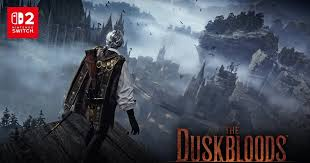
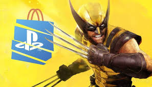

Duskbloods
Um dos nomes fortes para puxar curiosidade e busca ao longo do ano.

Clair Obscur
Visual de alto impacto e apelo editorial forte.

Wolverine
Projeto com grande força de marca e expectativa contínua.
Por que 2026 é um ano tão forte para games?
O ciclo de 2026 concentra continuações aguardadas, projetos ambiciosos e uma pressão enorme sobre hardware, engines e calendário de lançamentos. Para o leitor comum, isso cria ruído. Para um site editorial, cria oportunidade. Em vez de apenas listar games em ordem aleatória, o ideal é observar quais títulos têm maior tração de busca, capacidade de movimentar comunidade e potencial para gerar guias próprios, comparativos e cobertura recorrente.
Os melhores jogos de 2026 não são apenas os mais caros ou mais famosos. Alguns se destacam por inovação, outros por apelo de massa, outros por comunidade e longevidade. Por isso, uma boa curadoria precisa separar expectativa, marketing e chance real de impacto no ano.
Perfis de jogo que mais atraem busca
- AAA de mundo aberto: puxam tráfego orgânico por meses.
- RPGs e action RPGs: geram guias, builds e páginas de desempenho.
- Jogos competitivos: mantêm interesse de hardware e FPS.
- Lançamentos multiplataforma fortes: aumentam a chance de cobertura cruzada entre games, PC e console.
Como montar uma lista editorial realmente útil
Uma página de "melhores jogos de 2026" funciona melhor quando serve como hub. Ela precisa apontar para trailers, prévias, páginas de hardware, notícias recentes e futuros especiais. Em outras palavras: esse conteúdo não deve competir com o feed de notícias. Ele deve organizar o feed, transformar interesse momentâneo em navegação profunda e manter o usuário por mais tempo dentro do ecossistema do site.
Esse tipo de conteúdo também ajuda em SEO porque conversa com buscas mais amplas e topo de funil. Depois, a pessoa pode migrar para páginas mais específicas como requisitos, comparativos de GPU, guias por plataforma e artigos de custo-benefício.
Quais tendências mais importam em 2026?
Algumas tendências devem dominar o discurso do ano: maior peso de SSD e CPU em jogos extensos, mais debate sobre upscaling e geração de quadros, crescimento de experiências híbridas entre single-player cinematográfico e sistemas persistentes, além do fortalecimento de hubs de comunidade em torno de patches, rankings e meta de performance.
Outro ponto central é o efeito do hardware sobre a percepção do jogo. Em 2026, discutir um lançamento sem falar de desempenho, GPU alvo, CPU ideal e storage já não faz sentido para boa parte do público.
Veredito TechNetGame
Os melhores jogos de 2026 serão aqueles que combinarem força de lançamento, permanência na conversa pública e potencial para gerar leitura recorrente. Para o TechNetGame, a estratégia certa é tratar esta página como um hub central: uma entrada para notícias, comparações de hardware, páginas de requisitos e cobertura editorial contínua.